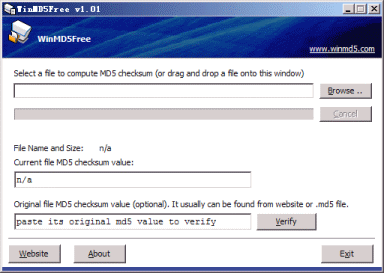

WinMD5Free
WinMD5Free is a tiny and fast utility to compute MD5 hash value for files. It works with Microsoft Windows 98, 2000, XP, Vista, and Windows 7/8/10/11.

As an Internet standard (RFC 1321), MD5 has been used in a wide variety of security applications, and is also commonly used to check the integrity of file, and verify download. WinMD5 is a small and easy tool to calculate md5 hash or checksum for different files (including files larger than 4 GB).
Features:- Supports almost all Windows platforms including Microsoft Windows XP, Vista, Windows 7, 8, 10, and Windows 11.
- Fast and multi-threaded. It can compute a 2 GB file less than 1 minute.
- Supports big files larger than 4 GB.
- Low resource usage. It uses less than 5 MB RAM.
- Don’t require .NET runtime installed. It is a standalone EXE file and the startup is speedy. There are MD5 tools for Windows on the market, but most of them requires .NET runtime and they may take a few seconds to start. This is also the reason I wrote the program.
- Supports “Drag & Drop”. You may either select a file, or drag and drop a file to the program window to get the MD5 hash value.
- Supports verification of original MD5 value and current MD5 value.
- Most important, it is FREE. No spyware or adware bundle.
- Small size, an effective and tiny tool for data security.
Download WinMD5 (only 249KB):
WinMD5Free.zip MD5: 73f48840b60ab6da68b03acd322445ee
WinMD5Free.exe MD5: 944a1e869969dd8a4b64ca5e6ebc209a
You may simply download it, then unzip and put the exe to any folder on your hard drive, and start to use. No installation is required. The download does not contain any virus, spyware, adware or malware.
License Agreement:
You are granted unlimited rights to distribute WinMD5Free, but not limited to, the following terms: WinMD5Free may not be sold or resold, distributed as a part of any commercial package, used in a commercial environment, used or distributed in support of a commercial service, or used or distributed to support any kind of profit-generating activity, even if it is being distributed freely. All files must remain intact and unmodified from the original as distributed by the author.
Disclaimer of Warranty:
THIS SOFTWARE AND THE ACCOMPANYING FILES ARE PROVIDED “AS IS” AND WITHOUT WARRANTIES AS TO PERFORMANCE OR MERCHANTABILITY OR ANY OTHER WARRANTIES WHETHER EXPRESSED OR IMPLIED. Because of the various hardware and software environments into which WinMD5Free may be put, NO WARRANTY OF FITNESS FOR A PARTICULAR PURPOSE IS OFFERED.
MD5 Algorithm|MD5 Software for other platforms|PDF Deskew